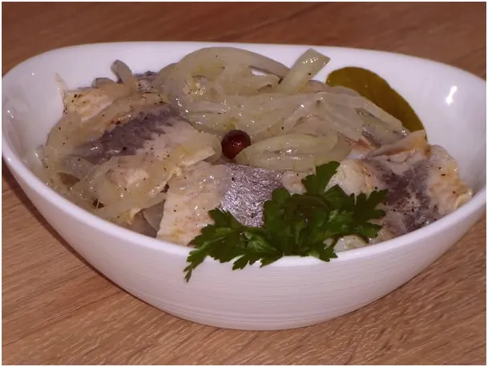
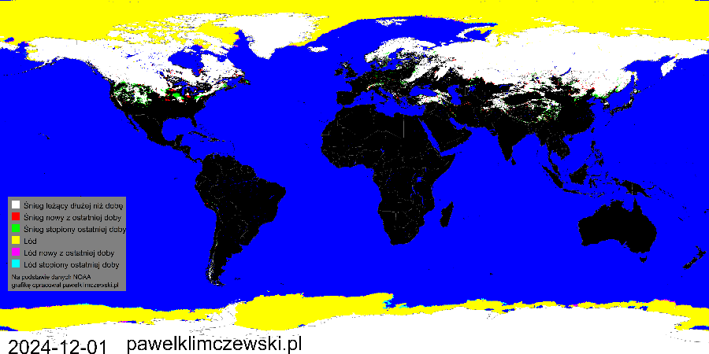
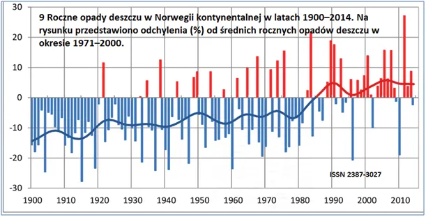
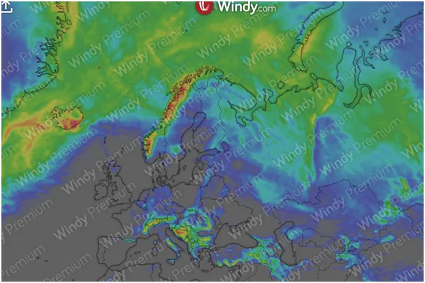
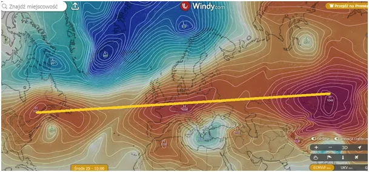
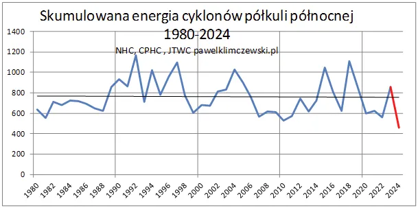

Euforyczne śledzie
Dwie doby dzielą nas od Wigilii Bożego Narodzenia i możemy z dużą dokładnością prognozować pogodę w Polsce, co nie jest łatwe. Animowane mapki pokazują nam, że obszar między Szczecinem a Rzeszowem to teren przejściowy, scena ścierania się ostrego, stałego klimatu kontynentalnego z Rosji oraz łagodnego, ale zmiennego klimatu morskiego znad Atlantyku.

Od kilku dekad wyraźnie widać, że deszczowo-śniegowe niże nadchodzące z zachodu przesunęły swoje trajektorie na północ i zamiast trafiać do Europy Wschodniej przysparzają wielu problemów w Skandynawii. Intensywne opady latem powodują osunięcia ziemi w norweskich górach, a zimowy śnieg odcina górskie miejscowości. Ponad 100 letni trend świadczy, że globalne zmiany cyrkulacji istnieją niezależnie od przemysłowej działalności człowieka.

Mapa poniżej przedstawia prognozy świeżego śniegu do końca roku. Tradycyjnie poza Norwegią obdarowane będą Bałkany, w tym gównie Bośnia i Chorwacja. To skutek studzenia Morza Śródziemnego, niestety chłodny Atlantyk szczędzi nam opadów, co pogłębia suszę. Niskie ciśnienie i temperatury powodują, że każda wilgoć w powietrzu szybko się skrapla, co widzimy na ulicach i drogach, ale tylko, gdy podczas wyżu zobaczymy Słońce doświadczymy suchości powietrza, także poza ogrzewanymi mieszkaniami.

Kolejna mapa pokazuje prognozę pola ciśnienia na 24 grudnia. Od Kanady przez Europę do Mongolii tworzy się wał wyżowy, który w strefie Atlantyku odcina wymianę ciepła z południa z Arktyką. Taki układ to deficyt ciepła w oceanie na południe od Zwrotnika Raka i spadek liczby wirujących niżów, w tym cyklonów.

Potwierdza to ostatni wykres wskazujący, że rok 2024 to najspokojniejszy od ponad 40 lat sezon cyklonów w sytuacji gdy w całym tym okresie mamy trend spadkowy. Szczegółowo opisałem to w tekście "Cyklony i Słońce, postscriptum." https://pawelklimczewski.pl/2024/10/27/cyklony-i-slonce-postscriptum/

Po świętach wyż da nam wiele rozpogodzeń, co poprawi nasze zimowe nastroje. Do wyżu polecam też tłuste ryby w tym śledzie, od starożytności znane ze swych właściwości poprawiania nastroju.
Paweł Klimczewski